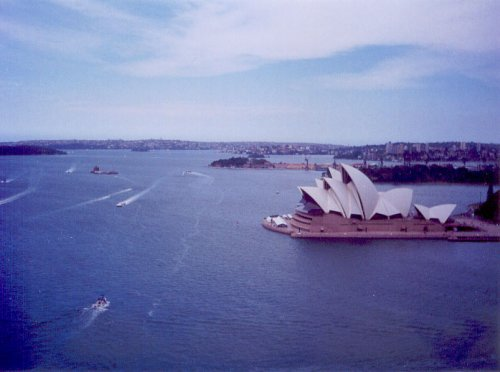
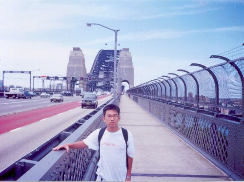
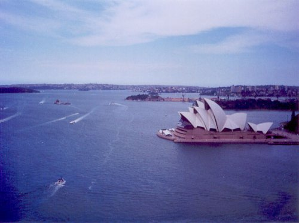
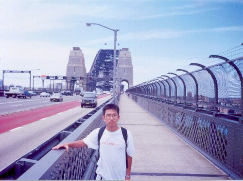

2000년 호주에 머물 때 시드니에서..
약 한달 보름 정도 머물렀다.
시드니의 오페라 하우스는 사진으로 보는 것만큼 아름답고, 그 옆에 있는 공원은 사람들에게 자연과 넉넉함을 안겨준다.

서울에도 저런 넉넉함을 줄수 있는 아름다운 곳이 있으면 얼마나 좋을랑가...
AU$5 정도면 사진 뒷편에 보이는 하버 브리지 탑 위에 올라갈 수 있다. 시드니 오페라 하우스는 내가 저 탑위에 올라가서 찍은 것이다.

약 한달 보름 정도 머물렀다.
시드니의 오페라 하우스는 사진으로 보는 것만큼 아름답고, 그 옆에 있는 공원은 사람들에게 자연과 넉넉함을 안겨준다.

서울에도 저런 넉넉함을 줄수 있는 아름다운 곳이 있으면 얼마나 좋을랑가...
AU$5 정도면 사진 뒷편에 보이는 하버 브리지 탑 위에 올라갈 수 있다. 시드니 오페라 하우스는 내가 저 탑위에 올라가서 찍은 것이다.
